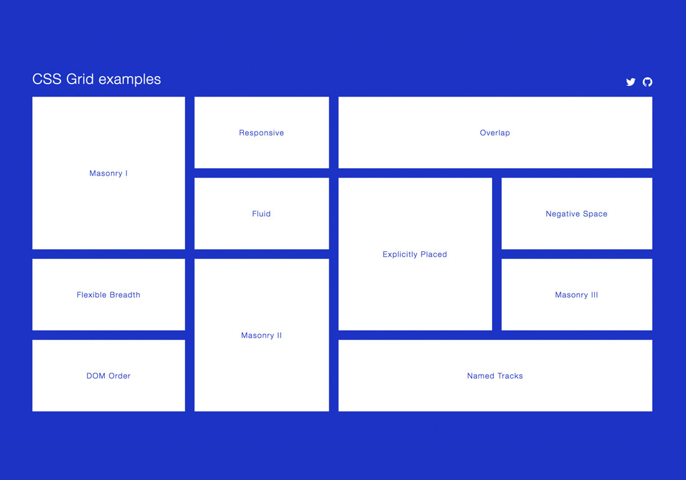

cssgrid

Данный CSS модуль определяет двумерную систему компоновки на основе сетки, оптимизированной для дизайна пользовательского интерфейса. Дочерние элементы могут быть помещены в произвольные места (слоты) при предопределённой гибкой или фиксированной сетке макета.